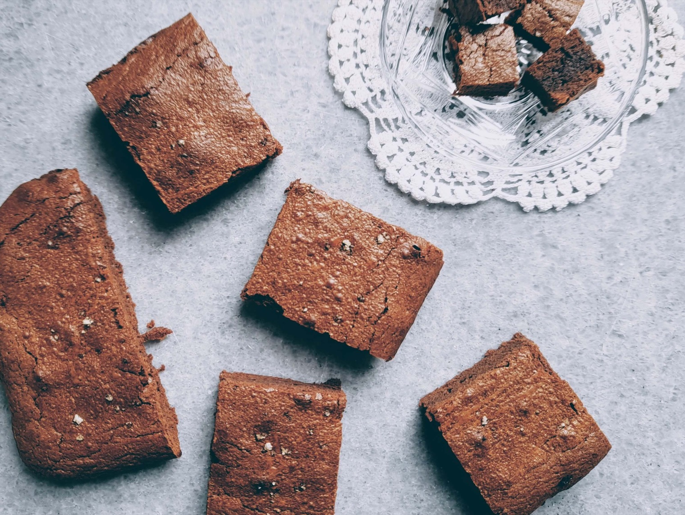
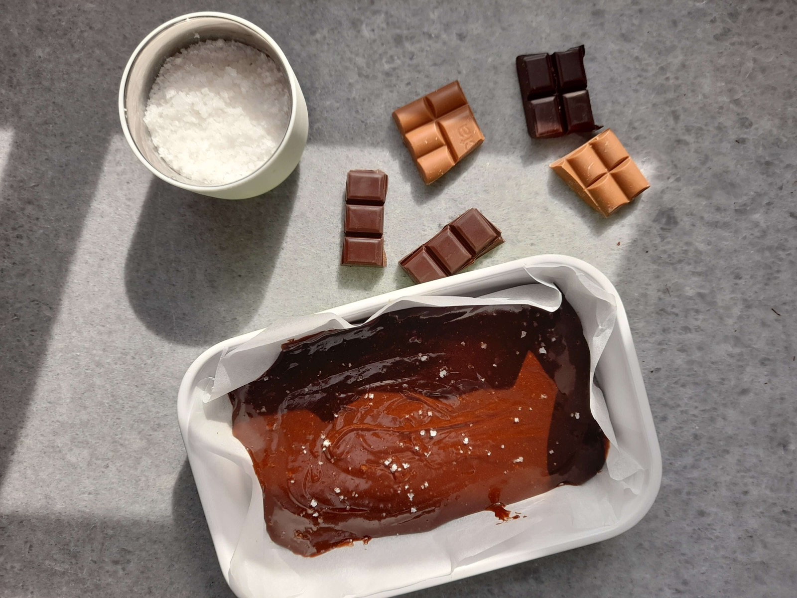
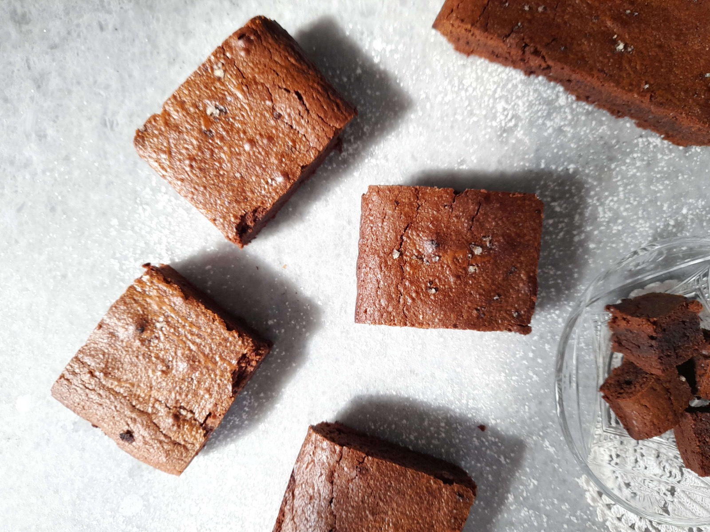
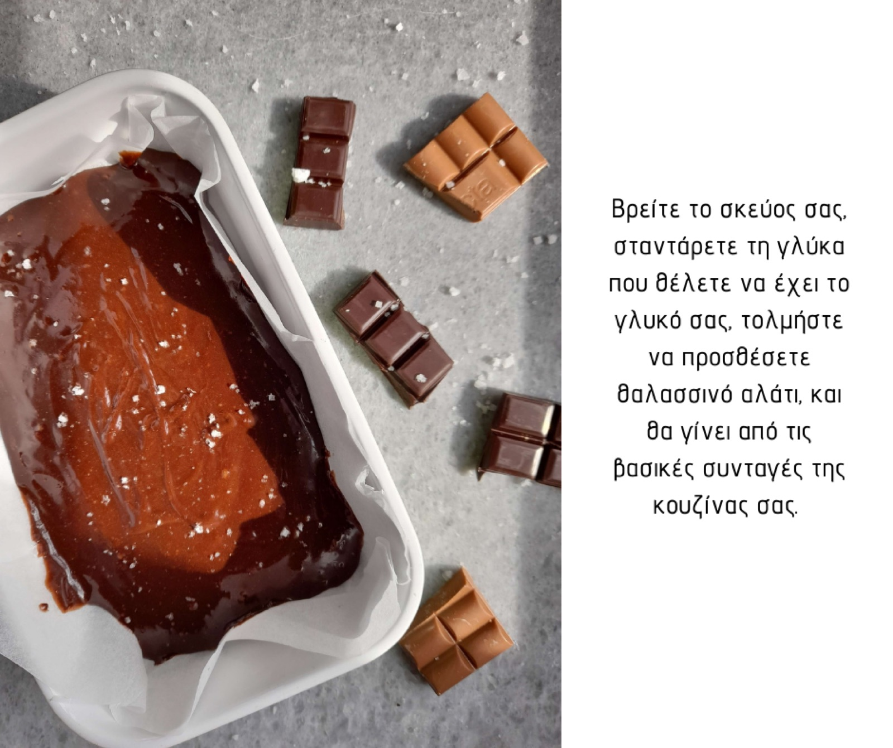

Μπράουνις με θαλασσινό αλάτι
Ένα μείγμα, δέκα συνταγές!
Υπάρχει ένα μαγικό μείγμα με το οποίο μπορεί κανείς να κάνει τουλάχιστον δέκα γλυκά. Λάβα κέικ, υπερσοκολατένιο κέικ, μπράουνις, μπράουνις με θαλασσινό αλάτι, σοκολατένια κυβάκια συνοδευτικά του καφέ και σίγουρα με τον καιρό θα σκεφτώ και κάτι ακόμη.

Το μείγμα και η διαδικασία είναι ίδια σε όλες τις περιπτώσεις. Αυτό που αλλάζει και τροποποιεί ριζικά το αποτέλεσμα είναι το σκεύος στο οποίο το ψήνουμε και ο χρόνος ψησίματος. Έχω δώσει ήδη τη συνταγή για το λάβα κέικ και τώρα δίνω τα μπράουνις με το θαλασσινό αλάτι.
Η ζάχαρη της συνταγής είναι τόσο-όσο, και σε συνδυασμό με το θαλασσινό αλάτι, δίνει ένα εξαιρετικό αποτέλεσμα.

Υλικά
- 250 γρ σοκολάτα κουβερτούρα 55 – 65 % κακάο
- 170 γρ σοκολάτα γάλακτος
- 200 γρ. βούτυρο
- 5 αυγά μεσαία (ή 4 μεγάλα)
- 130 γρ. ζάχαρη
- 130 γρ αλεύρι για όλες τις χρήσεις

Υλοποίηση
- Σπάμε τις σοκολάτες σε κομμάτια και μαζί με το βούτυρο τα λιώνουμε σε μπεν μαρί. Ανακατεύουμε καλά ώστε να ομογενοποιηθεί πλήρως το μείγμα.
- Χτυπάμε με το μίξερ τη ζάχαρη και τα αυγά έως ότου αφρατέψουν.
- Ενοποιούμε τα δύο μείγματα και τα ανακατεύουμε καλά με μία σπάτουλα μαρίζ.
- Κοσκινίζουμε το αλεύρι και το ενσωματώνουμε ανακατεύοντας με τη μαρίζ.
- Σε ένα ταψί διαστάσεων 35Χ25 στρώνουμε μία λαδόκολλα, η οποία να καλύπτει και τα πλαϊνά του ταψιού. Ρίχνουμε μέσα το μείγμα, το απλώνουμε ομοιόμορφα με τη μαρίζ και το πασπαλίζουμε με δύο πρέζες θαλασσινό αλάτι.
- Ψήνουμε σε προθερμασμένο φούρνο, στον αέρα, στη μεσαία θέση, για 10 λεπτά στους 200 βαθμούς, και άλλα 8 λεπτά στους 150 βαθμούς.
Το βγάζουμε από το φούρνο, το αφήνουμε να κρυώσει, το κόβουμε και το σερβίρουμε. Μπορούμε να το κόψουμε σε σοκολατένιες μερίδες ή σε μικρά κυβάκια, συνοδεύτηκα του καφέ και του τσαγιού.
Οι διαστάσεις του ταψιού είναι πολύ σημαντικές. Αν απλωθεί το μείγμα σε μεγαλύτερο ταψί, τα μπράουνις θα γίνουν πολύ λεπτά και θα παραψηθούν.
